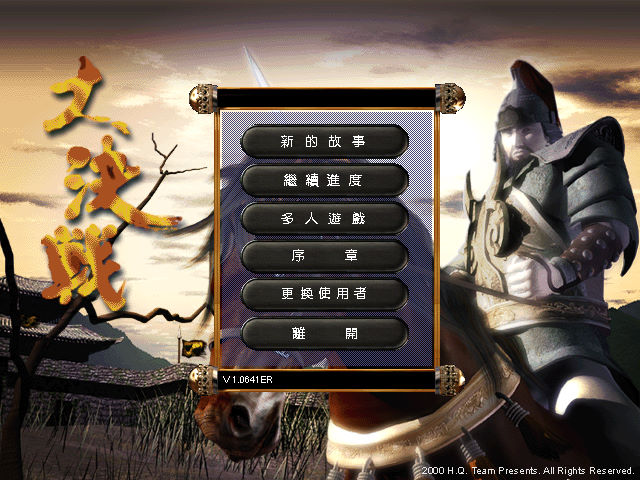
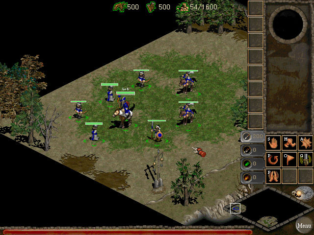
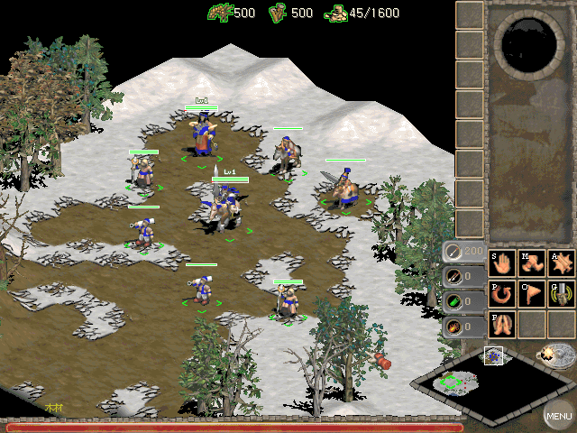

名稱：大決戰／千年戰爭 (Myth of Millennium，中文版)
簡介：HQ Team 2000年出品的即時戰術遊戲，由eSofnet代理發行。2001年由會宇繁中化並代
理發行，大陸則由金山軟件簡中化並代理發行 [待補]。



保護：簡中版為光碟，繁中版無保護。
備註：繁中版為1CD，版本為1.0641ER，簡中版為2CD（第二片為資訊光碟），版本為1.065ER。
繁簡兩版本各關的人員與地圖配置均不同，如第一關繁中為草原，簡中為冰原。